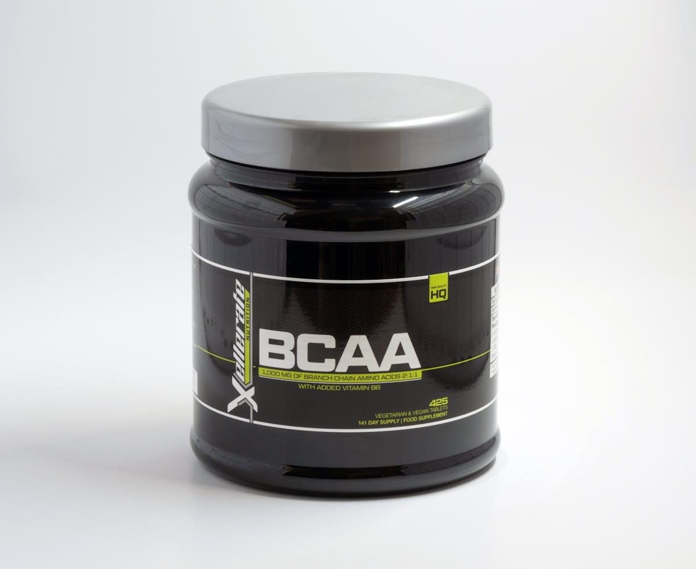

建立预击routine，3步复原法，让你的练习成果在比赛中发挥。
提升髋部旋转和胸椎灵活度，打出更远的距离和更流畅的挥杆。
掌握站姿、杆面和击球点，让沙坑救球成功率提升到80%以上。
聪明球友的球场管理思维，用策略而非蛮力降低总杆数。

检查握杆、站位和左肩启动，建立稳定的内侧下杆轨迹。
3000-15000元三档预算完整指南，帮你避开营销陷阱。
3-6-9英尺ladder练习法，建立稳定的起步线和速度控制。
动态激活 + 渐进挥杆 + 推杆找速，帮助你第一洞就进入状态。
建立可重复系统，减少100码内失误，稳定降低总杆数。